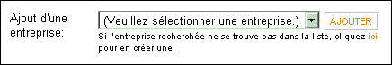
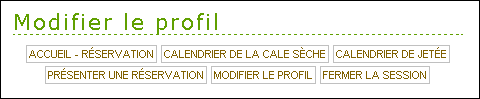
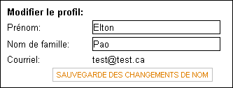
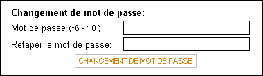
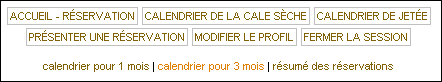

Cale sèche d'Esquimalt (CSE)Système de réservation en ligne : Guide de l'utilisateurTable des matières 2.2.1 Par où commencer
2.2.2 Compagnie(s) de l'utilisateur 2.2.3 Créer un compte de compagnie 2.2.4 Activer un compte d'utilisateur 3.1.1 Entreprises
3.1.2 Réservations 3.2.1 Modifier les renseignements
personnels
3.2.2 Changement de mot de passe 3.3.1 Ajouter des navires
3.3.2 Modifier le profil de navires 3.3.3 Supprimer des navires 3.4.1 Réserver une cale sèche
3.4.1.1 Demande
de dates précises
3.4.1.1 Demande de la prochaine période disponible
3.4.2 Réserver une jetée
3.4.3 Modifier une réservation 3.4.4 Annuler une réservation 3.4.5 Annulations et suppressions pour des raisons administratives 3.4.6 Préavis de 24 heures 3.5.1 Calendriers
3.5.2 Sommaire des réservations
3.6.1 Tarifs de droit de cale sèche
3.6.2 Tableau 1 3.6.3 Clause d'indemnisation 3.6.4 Formulaire de modification d'une réservation
Le
système de réservation en ligne de la Cale sèche d'Esquimalt
(CSE) est une façon pratique de réserver électroniquement des
installations de la CSE. Le système permet aux utilisateurs
d'observer l'état des réservations qu'ils ont fait pour retenir
la cale sèche ou une jetée, et donne accès à toutes les activités
connexes.
Retour à la table des matières Avant
d'entrer dans le système veillez à ce que votre navigateur
respecte les paramètres de configuration suivants :
Retour à la table des matières
2.2.1 Par où commencer
Allez
à la page principale du site de la CSE : http://www.pwgsc.gc.ca/pacific/egd/index-f.html
et cliquez sur « Réservations » dans le menu latéral.
Cliquez sur le lien « application des réservations », puis
cliquez sur « ajouter un nouveau compte d'utilisateur ». Entrez
vos coordonnées, y compris votre prénom, votre nom de famille,
un mot de passe de 6 à 10 caractères et votre adresse de
courriel, lesquels sont tous des renseignements obligatoires.
L'adresse de courriel que vous donnerez sera utilisée pour l'entrée
dans le système et les avis que la CSE vous enverra par courriel.
Le système ne fait pas la distinction entre les majuscules et les
minuscules pour les mots de passe, donc vous pouvez utiliser aussi
bien les unes que les autres. Pour un mot de passe plus sécuritaire,
nous vous suggérons d'utiliser des lettres et des chiffres.
2.2.2 Entreprises(s) de
l'utilisateur
À
la prochaine page, ajoutez à votre profil la ou les entreprises que
vous représentez. Choisissez votre entreprise dans le menu déroulant
et cliquez sur « Ajouter ». Vous pouvez le refaire
autant de fois qu'il le faut. Si l'entreprise que vous représentez
n'est pas énumérée, voir le paragraphe 2.2.3.
2.2.3 Créer un compte
d'entreprise
Cliquez sur
le lien « ici » sous le menu déroulant (figure 1)
pour créer un profil d'entreprise. Tous les champs sont
obligatoires, sauf « Adresse 2 » et « Fax ».
En cliquant sur le bouton « soumettre », vous créerez
le compte d'entreprise et aviserez la CSE de la demande de création
d'un nouveau profil d'entreprise. Le profil d'entreprise devra
être approuvé avant que l'on ne puisse l'activer.

Figure 1 : Ajouter une nouvelle entreprise
2.2.4 Activer un compte d'utilisateur Lorsque
votre ou vos entreprises ont été ajoutées, cliquez sur «
Soumettre une demande d'ajout d'un nouvel utilisateur ». Cela
aura pour effet de transmettre votre demande de compte et d'en
aviser l'administration de la CSE. Votre compte doit être approuvé
avant que l'on ne puisse l'activer. Si vous ajoutez plusieurs
entreprises à votre profil, il n'est pas nécessaire qu'elles
soient toutes approuvées pour que votre compte soit activé. Vous
recevrez un avis par courriel lorsqu'une affiliation
utilisateur-entreprise est approuvée ou rejetée.
Retour à la table des matières
L'approbation
d'une seule affiliation utilisateur-entreprise est nécessaire
pour que le compte soit activé. Lorsque vous recevez un courriel
vous avisant que l'une de vos affiliations utilisateur-entreprise
est approuvée, entrez dans le système avec l'adresse de courriel
et le mot de passe que vous avez indiqués lors de la création de
votre compte. Allez à http://www.pwgsc.gc.ca/pacific/egd/index-f.html
et cliquez sur « Réservations » dans le menu latéral. Cliquez
ensuite sur le lien « Application des réservations ». Cela
vous mènera à la page d'entrée dans le système.
Retour à la table des matières
Si
vous avez oublié votre mot de passe, cliquez sur le lien « Oubli
du mot de passe » de la page d'entrée. Entrez l'adresse
de courriel que vous utilisez pour l'entrée dans le système, et
votre mot de passe vous sera transmis par courriel.
Retour à la table des matières Lorsque
vous entrez dans l'application, vous arrivez à la « page de
bienvenue » du système de réservation. Vous avez accès à
toutes les fonctions du système de réservation à partir de
cette page. Toutes les principales fonctions sont disponibles à
partir de la barre de menus sous le titre de la page (figure 2).
Vous pouvez aussi naviguer dans le site au moyen de la piste de
navigation (figure 3). La piste de navigation vous indique le
chemin que vous avez suivi jusqu'à maintenant dans le site, ce
qui peut être très utile si vous voulez revenir en arrière.

Figure 2: barre de menus
 Figure 3: piste de navigation
3.1.1 Entreprises
La
page de bienvenue affiche des renseignements sur une entreprise à
la fois. Le nom de l'entreprise dont on voit les renseignements
est affiché dans le titre. Si vous êtes autorisé à représenter
plus d'une entreprise, l'affichage des renseignements de
l'entreprise précisée se fera sous la barre de menus, et les noms
des autres entreprises seront affichés tout juste en dessous
(figure 4). Vous pouvez passer d'une entreprise à une autre
en cliquant sur leur nom. Le nom de toute entreprise pour laquelle
vous attendez l'approbation de représentation appara®tra tout juste
en dessous de votre liste d'entreprises.
 Figure 4: vos entreprises
3.1.2 Réservations
Toutes
les réservations pour l'entreprise que vous choisissez sont
affichées sur la page de bienvenue. Pour une liste complète de
toutes les réservations, y compris les réservations passées,
cliquez sur le bouton « Toutes les réservations ».
Les réservations sont ainsi divisées : « Cale sèche », « Quai de débarquement nord » et « Jetée sud ». Seuls les renseignements essentiels sont affichés : nom du navire, dates au bassin, état de la réservation et agent responsable de la réservation. En cliquant sur le nom du navire, vous pouvez voir d'autres renseignements sur la réservation, et vous avez l'option de la modifier ou de l'annuler. Pour les réservations de la cale sèche, il y a aussi un lien menant qui permet de « Consulter le formulaire de tarif » ou d'apporter une « Modification au formulaire de tarif ». Veuillez consulter le paragraphe 3.6.1 pour de plus amples renseignements sur les formulaires de tarif. Retour à la table des matières
Pour
modifier votre profil, cliquez sur « Modifier le profil » dans
la barre de menus. La page « Modifier le profil » est divisée
en trois sections, et chacune d'entre elles a son bouton de soumission.
3.2.1 Modifier les renseignements
personnels
La première
section vous permet de modifier votre prénom et votre nom. L'adresse de
courriel ne peut pas être modifiée, étant donné qu'il s'agit de votre
code d'identification pour l'entrée dans le système. Pour utiliser une
adresse de courriel différente, vous devez créer un nouveau compte
d'utilisateur.

Figure 5 : modifier votre nom
3.2.2 Changement de mot de passe
La troisième
section vous permet de changer votre mot de passe, qui doit compter de 6 à
10 caractères. Le système ne fait pas la distinction entre les
majuscules et les minuscules pour les mots de passe, donc vous pouvez
utiliser aussi bien les unes que les autres. Pour des raisons de sécurité,
nous vous suggérons d'utiliser des lettres et des chiffres dans votre mot
de passe, et de le changer fréquemment.

Figure 7: modifier votre mot de passe
Retour à la table des matières
Les
navires d'une entreprise sont énumérés dans la page de bienvenue sous la
rubrique « Navire(s) ». Si le navire que vous cherchez n'est
pas dans la liste, vérifiez si vous avez bien les renseignements pour la
bonne entreprise. Pour voir les renseignement sur le navire, cliquez sur
son nom.
3.3.1 Ajouter des navires
Cliquez
« Ajout d'un navire » sous la liste des navires de
l'entreprise. Tous les champs sont obligatoires. Les longueurs et les
largeurs sont en mètres, et les temps d'installation et de retrait des
tins sont en jours. Le temps d'installation des tins est le nombre de jours nécessaires
pour installer les tins de soutien avant que l'eau ne puisse être enlevée
de la cale, et le temps de retrait des tins est le nombre de jours nécessaires
pour faire l'inverse. Il faut inclure ces temps dans le nombre de jours
demandés pour la réservation.
Si un navire est anonyme, toutes les réservations pour ce navire seront affichées sans nom dans les calendriers et les sommaires des réservations. Ainsi, seules les dates et l'état de la réservation sont affichés pendant que celle-ci est en traitement attente de confirmation ou provisoire. Lorsque la confirmation est donnée, l'information additionnelle suivante est affichée : l'entreprise, le nom du navire et sa longueur, les sections réservées ainsi que les dates de la réservation. Tout autre renseignement sur le navire ou la réservation ne peut être vu par les utilisateurs d'autres entreprises. Les administrateurs ont accès à toute l'information sur les réservations et les navires, peu importe si ces derniers sont anonymes ou non. 3.3.2 Modifier le profil de navires
Cliquez
sur le nom du navire dans la rubrique « Navire(s) », puis cliquez
sur le bouton « Modifier le navire ». Vous pouvez
modifier tous les renseignements sur le navire, à l'exception de
l'entreprise, à condition que le navire n'ait pas de réservation confirmée.
Dans le cas contraire, vous ne pourrez pas modifier les dimensions du
navire. Pour ce faire, vous devrez communiquer avec l'administration du
CSE. L'administration est avisée lorsque les renseignements sur un navire
sont modifiés.
3.3.3 Supprimer des navires
Cliquez
sur le nom du navire dans la rubrique « Navire(s), puis cliquez sur
le bouton « Supprimer le navire ». Les navires ne peuvent être supprimés
que s'il ne font l'objet d'aucune demande de réservation. Dans le cas
contraire, vous recevrez un message affichant les réservations pour le
navire qui doivent être annulées avant que le navire ne puisse être
supprimé. Si vous arrivez à supprimer le navire, vous recevrez un avis
de confirmation.
Retour à la table des matières
3.4.1 Réserver la cale sèche
Cliquez
sur « Présenter une réservation » sous vos réservations
ou sur « Présenter une réservation »
dans la barre de menus, puis choisissez l'option de réservation de la
cale sèche. Il y a deux façons de réserver la cale sèche : indiquer des
dates précises, ou demander le nombre de jours voulus dans la prochaine période
libre (p. ex. demander la prochaine période de 10 jours dans l'année
qui vient.).
3.4.1.1 Demande de
dates précises
Tous
les champs sont obligatoires pour la réservation. Il faut choisir
l'entreprise et le navire au moyen des menus déroulants, et il faut préciser
les dates du début et de la fin de la période réservée. Vous pouvez
entrer manuellement les dates « mm/jj/aaaa » ou utiliser les
boutons calendriers. Lorsque vous cliquez sur l'un de ces boutons, un
petit calendrier appara®t, dans lequel vous pouvez cliquer sur la date
choisie. Cette date sera entrée dans la bo®te de date correspondante.
Lorsque vous choisissez des dates de bassin, veuillez vous assurer de
tenir compte du temps nécessaire pour installer et retirer les tins. (Nota
: les dates de bassin sont inclusives, p. ex. une réservation
de trois jours se fera du 1er mai au 3 mai.)
Si la cale sèche est disponible pour les dates demandées, vote demande sera soumise. Si rien n'est disponible pour les dates précisées, vous avez le choix d'essayer de nouvelles dates, ou de maintenir votre demande dans l'espoir d'une annulation. Veuillez consulter le paragraphe 3.4.6 pour de plus amples renseignements sur le processus de préavis de 24 heures pour les annulations. Lorsque votre réservation est soumise, un avis est transmis par courriel à l'administration de la CSE, et vous recevez un formulaire de tarif des droits de cale sèche. Il s'agit d'un formulaire facultatif; pour de plus amples renseignements, voir le paragraphe 3.6.1. Il incombe à l'administration de la CSE d'approuver la réservation; toutefois, lorsque vous avez reçu l'avis de confirmation de la réservation par courriel, vous devez envoyer les formulaires appropriées - le tableau 1 et la clause d'indemnisation - ainsi que les frais de réservation de 3 500 $ avant que la réservation ne puisse être confirmée. Prière de consulter la section 3.6 pour de plus amples renseignements sur les formulaires requis. Si votre réservation est approuvée et que d'autres réservations provisoires sont faites pour la même période, la politique de préavis de 24 heures sera appliquée (section 3.4.6). Vous serez avisé par courriel de la confirmation éventuelle de votre réservation. 3.4.1.2 Demande de la
prochaine période disponible
Tous les
champs sont obligatoires; il faut donc choisir l'entreprise et le navire
au moyen de menus déroulants, une période doit être précisée de la façon
décrite au paragraphe 3.4.1.1, et le nombre de jours requis pour la réservation
doit être précisé. Le nombre de jours pour la réservation doit être
inférieur ou égal à la durée de la période précisée.
Lorsque vous soumettez une demande, on vous donnera la prochaine période disponible pour la durée de la réservation précisée. Si c'est acceptable, vous pouvez faire la réservation; sinon, vous pouvez essayer une autre période. (Nota : Lorsque vous utilisez l'autre méthode de réservation qui prend les dates précises, si votre période précisée n'est pas disponible, votre réservation sera approuvée et vous serez mis sur une liste d'attente au cas où une annulations surviendrait, et la politique de préavis de 24 heures sera appliquée. Prière de consulter le paragraphe 3.4.6 pour de plus amples renseignements. (La méthode qui consiste à demander la prochaine période disponible n'offre pas cette option.) Lorsque vous soumettez une demande de réservation, un avis est transmis par courriel à l'administration de la CSE, et vous voyez appara®tre le formulaire des tarifs de radoub. Il s'agit d'un formulaire optionnel; pour de plus amples renseignements, voir le paragraphe 3.6.1. Il incombe à l'administration de la CSE d'approuver la réservation; toutefois, lorsque vous avez reçu l'avis de confirmation de la réservation par courriel, vous devez envoyer les formulaires appropriées - le tableau 1 et la clause d'indemnisation - ainsi que les frais de réservation de 3 500 $ avant que la réservation ne puisse être confirmée. Prière de consulter la section 3.6 pour de plus amples renseignements sur les formulaires requis. Si votre réservation est approuvée et que d'autres réservations provisoires sont faites pour la même période, la politique de préavis de 24 heures sera appliquée (section 3.4.6). Vous serez avisé par courriel de la confirmation éventuelle de votre réservation. 3.4.2 Réserver une jetée
Cliquez
sur « Présenter une réservation » sous vos réservations ou dans la barre des menus, et choisissez l'option de réservation
d'une jetée. Tous les champs sont obligatoires pour la réservation d'une
jetée. Vous pouvez choisir l'entreprise, le navire et la jetée au moyen
des menus déroulants. Les dates du début et de la fin de période voulue
peuvent être précisées de la façon décrite au paragraphe 3.4.1.1.
Lorsque vous soumettez une demande de réservation, l'administration de la CSE en est avisée. Pour que la réservation soit confirmée, vous devez faire parvenir les formulaires du tableau 1 et de la clause d'indemnisation. Prière de consulter le paragraphe 3.6 pour de plus amples renseignements sur les formulaires demandés. Vous serez avisé par courriel de la confirmation éventuelle de votre réservation. Il n'y a pas de frais pour la réservation d'une jetée, mais si le navire n'arrive pas aux dates indiquées, l'entreprise se verra facturer des frais de réservation. 3.4.3 Modifier des réservations
Les réservations
ne peuvent être modifiées en ligne. Si vous souhaitez modifier une réservation,
vous devez communiquer avec l'administration de la CSE et transmettre par
courrier ou par fax une copie papier du formulaire de modification d'une réservation.
Une version PDF de ce formulaire est disponible en ligne. Pour l'ouvrir,
allez à la page de bienvenue et cliquez sur « Formulaires de réservation »
en haut de la liste de vos réservations.
3.4.4 Annuler des réservations
Il est
possible d'annuler des réservations. Pour ce faire, cliquez sur le nom du
navire dans la liste des réservations sur la page de bienvenue ou la page
des réservations archivées, puis cliquez sur le bouton « Demander
l'annulation ». Lorsque vous demandez une annulation,
l'administration de la CSE sera avisée de la demande, et votre annulation
sera considérée comme en traitement jusqu'à ce que vous receviez un autre
avis. Si vous ne recevez pas d'avis d'annulation de votre réservation,
cela veut dire que celle-ci est maintenue.
3.4.5 Annulations et suppressions
administratives
L'administration
de la CSE a la capacité d'annuler les réservations actuelles, ainsi que
de supprimer les réservations passées. Vous serez avisé par courriel si
l'une de vos réservations est annulée. Si l'administration supprime une réservation
passée, vous ne serez pas avisé, mais vous remarquerez toutefois
qu'elle n'est plus affichée dans la liste de vos réservations archivées.
3.4.6 Préavis de 24 heures
la CSE
maintient une politique de préavis de 24 heures en ce qui concerne
les listes d'attente. Si plusieurs réservations provisoires indiquent la
même période de cale sèche, la politique veut que le principe du premier
arrivé, premier servi s'applique. Par conséquent, la première entreprise
qui a demandé la période la reçoit, à condition qu'elle paye les frais
de réservation et soumette les formulaires requis.
Cependant, si une autre entreprise plus bas dans la liste paye les frais de réservation et fournit les formulaires en premier, toutes les entreprises ayant des demandes de réservation provisoires faites antérieurement auront 24 heures de préavis pour payer les frais de réservation, en commençant par le début de la liste. L'entreprise en haut de la liste sera avisée la première. Si elle choisit de ne pas prendre la période, la prochaine entreprise sera avisée, et ainsi de suite. Si aucune de ces entreprises ne paye les frais de réservation dans le délai alloué, l'entreprise originale qui fait la demande de confirmation reçoit la période. La même politique s'applique lorsque des périodes deviennent disponibles en raison d'annulations. Retour à la table des matières
3.5.1 Calendriers
La barre
de menus du haut donne accès aux calendriers de la cale sèche et des jetées.
Des tableaux mensuels et trimestriels sont disponibles (figure 8). Les
calendriers affichent par défaut le mois en cours, mais on peut voir
d'autres mois au moyen des menus déroulants. Chaque jour affiche un
sommaire des réservations confirmées pour chaque section ou chaque jetée,
ainsi que le nombre de réservations en traitement ou provisoires pour cette
journée. En cliquant sur une date, vous voyez un sommaire plus détaillé
des réservations pour la journée en question.
Si un navire est anonyme et si la réservation n'est pas confirmée, le calendrier indiquera « Navire de haute mer », et ne donnera que l'état de la réservation et les dates d'amarrage. Lorsque la réservation est confirmée, quelques renseignements additionnels limités sont affichés. Pour les navires que tous peuvent voir, un lien mènent à des renseignements plus détaillés sur la réservation et le navire. 3.5.2 Sommaire des réservations
À
partir de toutes les pages du calendrier, vous avez accès à un lien « Résumé des réservations » tout juste sous la barre de menus du haut
(figure 8). Le résumé des réservations est un tableau regroupant
l'information donnée dans les calendriers. Il affiche le nom et la
longueur du navire, l'état de la réservation, la ou les sections ou la
jetée réservées, les dates d'amarrage et la date où la demande de réservation
a été soumise. On peut faire afficher une version facile à imprimer en
cliquant sur le bouton « Voir la version imprimable ».

Figure 8 : Vue d'ensemble des réservations
Retour à la table des matières 3.6.1 Tarifs des droits de cale sèche
Le
formulaire des tarifs de droits de cale sèche est un formulaire optionnel qui vous
permet de préciser les services et les installations dont vous aurez
besoin, et qui permettra ainsi à la CSE d'avoir les ressources dont vous
aurez besoin durant la période que vous réservez. Lorsque votre réservation
est confirmée, vous devriez confirmer également vos besoins exacts
directement avec la CSE.
Le formulaire s'affichera après que vous aurez demandé une réservation. Vous pouvez le remplir à ce moment-là, ou décider de le faire plus tard. Si vous voulez modifier vos entrées ou remplir le formulaire plus tard, vous pourrez le faire à partir de la page de bienvenue. Les formulaires des tarifs peuvent être modifiés pour les réservations en traitement et provisoire. Cliquez sur le lien « Modification du formulaire de tarif » dans la liste des réservations pour apporter des changements ou remplir le formulaire pour la première fois. Si une réservation est confirmée, vous pouvez faire afficher le formulaire des tarifs en cliquant sur « Consulter le formulaire de tarif ». Pour faire apporter des changements au formulaire de tarif d'une réservation confirmée, prière de communiquer avec la CSE. 3.6.2 Tableau 1
Le
tableau 1 donne des renseignements sur le navire, et sert d'entente entre
l'agent qui fait la réservation et la CSE. la CSE doit recevoir le
tableau 1 avant que la réservation ne puisse être confirmée.
3.6.3 Clause d'indemnisation
La
clause d'indemnisation est une stipulation d'exonération de responsabilité
juridique qui dégage la Couronne de toute responsabilité en
ce qui concerne les blessures et les dommages qui pourraient être subis
durant tout le séjour du navire à la CSE. la CSE doit recevoir
ce formulaire avant qu'une réservation ne puisse être confirmée.
3.6.4 Formulaire de modification
d'une réservation
Pour
faire une demande de changement des dates d'une réservation, il faut
transmettre le formulaire de modification d'une réservation à la CSE.
Retour à la table des matières Pour
sortir du système, cliquez sur le bouton « Fermer la session », dans la
barre de menus du haut. Il faut toujours sortir du système pour mettre
fin à votre session, afin d'empêcher que d'autres personnes n'entrent
dans votre compte sur des ordinateurs partagés.
Retour à la table des matières |